‘bid’ is a very popular trading jargon ‘tidbids’ means a small and particularly interesting item of information. This brand name might give the user a sense of ease and comfort to learn
Overview
Tidbids is a self-guided course to help you re-invent your steps into technical trading. With all the great content scattered online (massive pieces of information), I believe that people should be able to learn from a collected and organized resource and a step-by-step guided platform.
Design Process
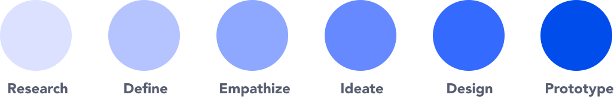
With a focus on UI for this project, the steps I covered in my design process included user stories, proto personas, user flows, sketching, wireframing, style guides, and prototyping.
Research
An extensive research conducted by me within my freiends and family and a lot of accquaintances helped me understand the general trends in a tier 2 city industrial of India. There were 200 respondents to my survey and a total of 6 questions. I kept my questions crisp and to the point. Look at the results, insights, and various opportunities I could derive from my findings.
Define
I started the first step in my process by defining and answering the 5 W questions.
What?
An app where users can learn about technical analysis and engage with a trustworthy community.
Who?
A vast group of traders who face great deal of diffculty learning and finding the ‘right’ resources.
When?
The learning and researching process will be performed on a daily basis while they are trading.
Where?
The app will mostly be used when the users are home or sometimes while commuting or in the office.
Why?
The users want to gain knowledge. Trading is getting popular by the day. Users want to increase their profits and trade safe.
Empathize
After defining the scope of the app, the next step was creating user stories and a proto personas to better understand my users’ needs and goals.
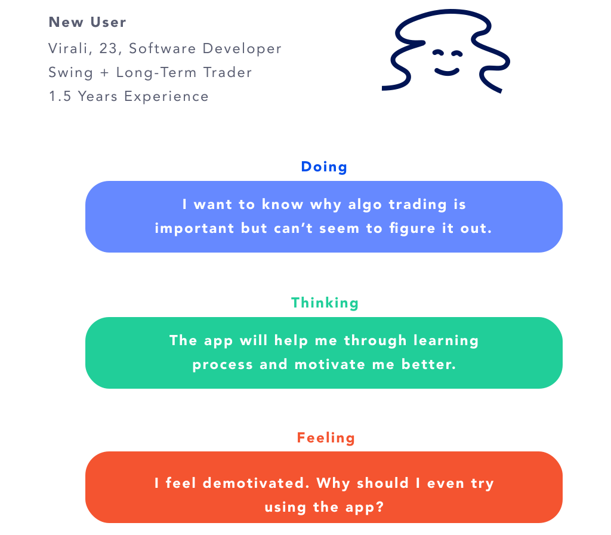
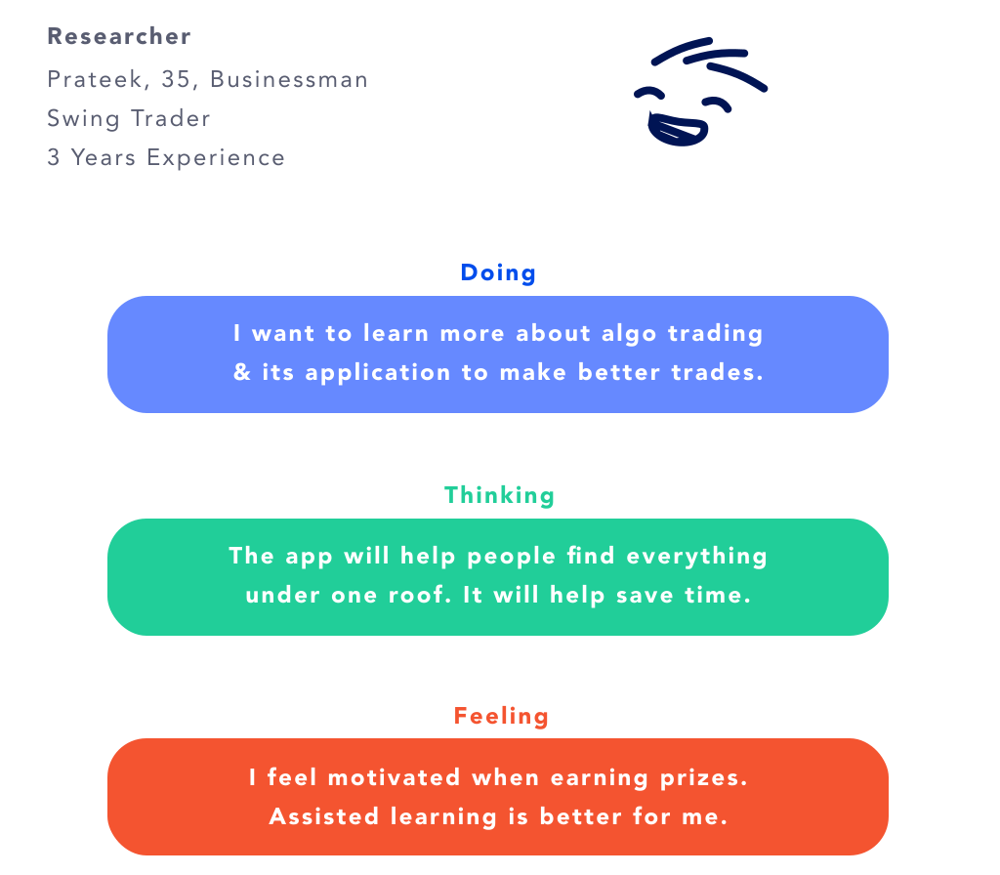
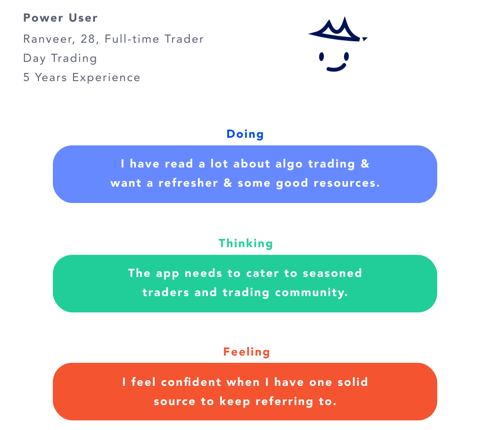
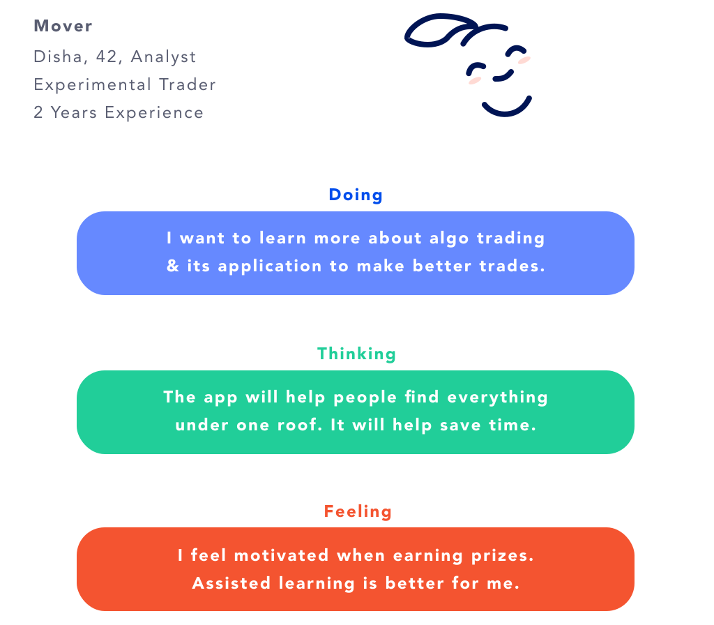
Journey Mapping
Here’s the journey of a one of the users who might use the app. A carefully thought out user journey is put down covering all the major touchpoints.
PROTO PERSONA:
Type: New user
Name: Virali
Age: 23
Job: Software Developer
Location: Bengaluru
Trading Type: Swing + Long-Term Trader
Experience: 1.5 Years Experience
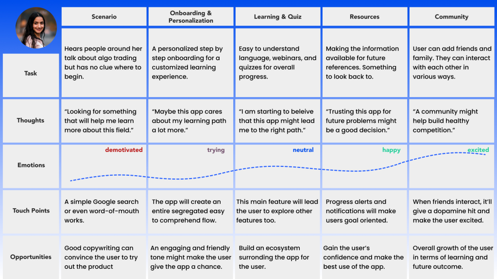
Important Features
-user onboarding and personalization-
-user freindly learning infrastructure-
-quizzes to keep the user serious on path-
-a forum to post questions-
-a community to share ideas-
-paper trading feature for hands-on learning-
-intuitive navigation bar for easy sitching-
-watchlist, dashboard and other cool features-
The tidBIDS design system was built to accommodate readabilty. Its supposed to be user-friendly for users of all ages. The design has accomodated a lot of features. Since I wanted to showcase a all-in-one trading platform, I’ve tried to bring forth various important aspects that helps a trader.
Light Color Scheme
Traditionally, learning platforms have been accustomed to lighter themes, primarily because most users study and work during daylight. I intentionally chose a light theme for the app since our users tend to engage in the app much earlier in the day, and in a room with bright lights. I’ve used a variant of gray(#595D71) and white(#FEFBFF), keeping the contrast to a minimum and at the same time, making it amazingly readable.
Color Scheme
Blue. Blue. Blue. That’s the first choice when it comes to building fintech products. Blue creates a trust among users. In this case, I’ve used an electric blue. Combine that with a soothing gray, and we have a perfect blend!
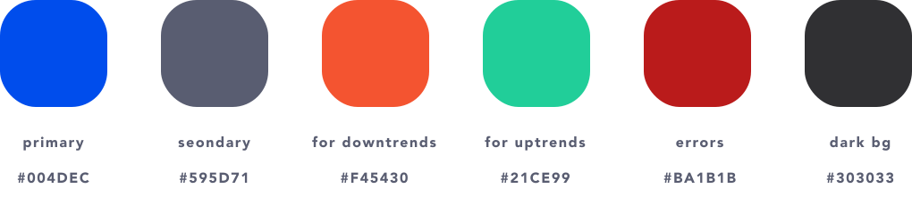
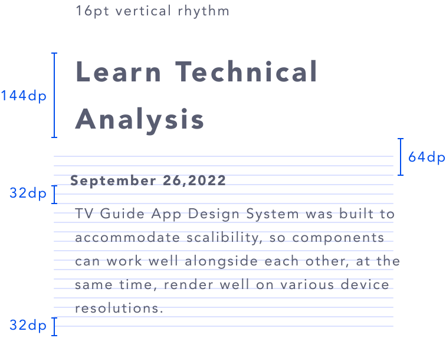
the most exciting phase... Prototyping and Visual Design...
Intro
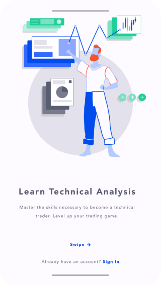
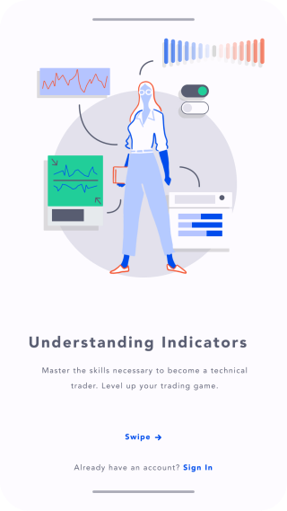
The visual elements in the intro took me a really long time to design. The goal was to use trading elements with the principles Google Matrial. The characters should appear as bold confident. This was the end result.
Know Your User
It is always important to know the users. Their needs are important. To make any ‘user’ facing product, a short survey with some basic questions is the way to go. In this case, the questions are asked to understand where the user can starte their trading journey from...
Setting End Goals
The users are given to choose the rigous of the course. They can choose between casual, regular and serious. This section also allows them to choose a path they’d like to start their learning journey from.
Course Overview
An interactive interface to navigate between chapter and various courses and keep a track of all the progress.
Card View of Each Chapter
The card biew is important. Really important. Combine this with daily progress bars and users will be motivated to study more. Completing each set of card will the user a sense of satisfaction which in turn will trigger the dopamine.
Quizzes, Levels & Trackers
Again, to keep the user motivated, and be serious about this course, quizzes will play an integral part. They also track their rprogress and see their daily streaks.
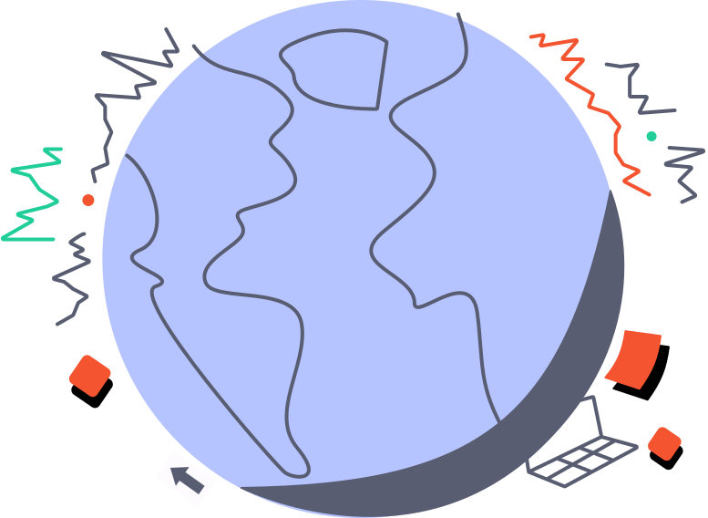
tidBIDS Community
The main community section helps the user to connect with traders around the globe. They can ask questions and resolve their doubts. The community will have strict guidelines to prevent fradulent activities.
tidBIDS MEET
One of the features that makes this app shine is the ‘MEET’ section. Users can connect with their friends. If allowed, friends can track each others’ trading activities. This will let them gain insights on how the real time trades are performing.
This is MY take on how a Trading App should look and feel like.
Since this is a learning app, I’ve incorporated a version of ‘virtual trading.’
Paper Trading aka Virtual Trading
When you practise something, only and only then you can achieve true greatness. The Paper Trading feature allows users to have honds-on experience regarding what they’ve learnt. Look carefully at the various screens above. They contain steps on how a user can create a strategy.
Backtesting
Once the strategy is created. The system checks how it performed on past data. For example: last 1 month, last 1 year, last 6 months, etc. Once, the results are satisfactory, and the user has a fair ideas that the strategy will perform well in the future, they can perform their trades. The screens show the resutls of each stock as well as the cumulative results. The user can also select the stocks they want to trade.
Trading Dashboard
The dashboard displays the trading P&L, all the strategies, watchlists, funds and quick links.
Navigation Bar & Watchlists
A carefully crafted navigation bar that allows the user to jump to any part of the app. I also designed a unique icon for each section of the app. The navigation bar and the watchlist can be swtiched back and forth. Since traders constantly want to keep a track of their favorite stocks, incorporating it here only seemed logical.
Prototype at a Glance
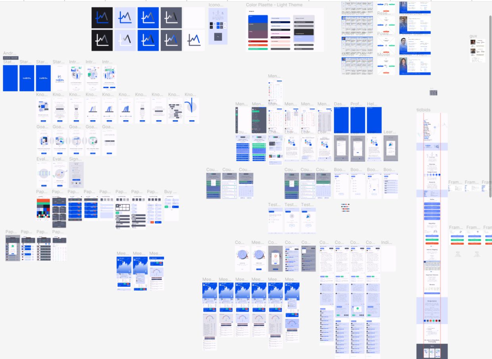
Key Takeaways
While working on this project, I realized that it is important to focus on one feature and perfect it. Since I focused on on too many features, the project ended up looking complex. Also, this was one the first projects I worked on. I was focusing a lot on visual elements. But soon, I realized that it is more important to give attention to the human aspect.